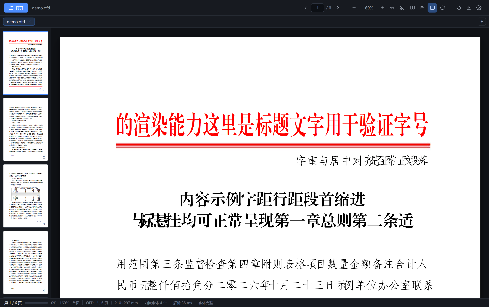
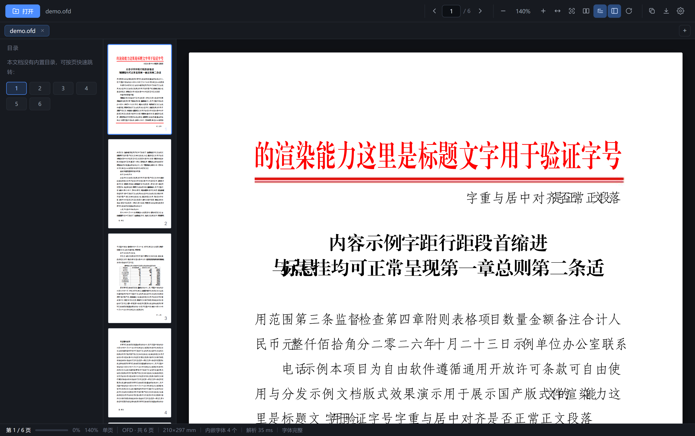
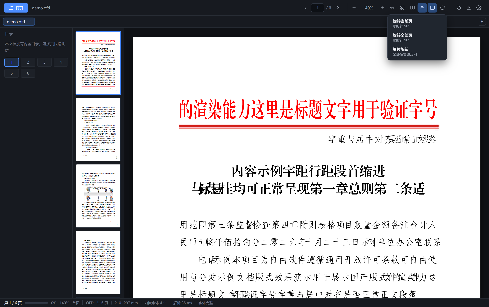

OFDee 是一款专注 OFD / PDF 的桌面阅读器：自研 OFD 渲染内核、便携版单文件、 不写注册表、不联网。红头文件的内嵌字体、字距版式，原样呈现。
打开一份 OFD，红头、文号、正文、落款直接就是正确的 —— 内嵌字体自动修复，压缩字距按标准解析。

1 2 3截图为真实渲染输出（演示文档，非真实公文）
一个安装包都没有：解压即用，删除即走，数据只存在本机。
遵循 GB/T 33190-2016，不依赖任何第三方 OFD 库。XML、ZIP 解压全部使用浏览器原生能力。
自动重建国产 OFD 常见的不合规内嵌字体（仿宋、黑体、小标宋、楷体），红头文件原样显示。
单页 90° 旋转、全册旋转、一键复位；缩略图与导出全部联动，扫描件横竖混排也能正着看。
像纸质书一样左右对开，适配宽屏；配合缩放与适应宽度，长文档阅读不迷路。
读取 PDF 书签与 OFD 大纲直达章节；没有大纲时自动生成页码网格，同样能快速跳页。
OFD / PDF 可导出为 PDF 或 PNG 图片包，旋转状态一并保留，方便打印与分发。
矢量渲染的文字可直接选择复制，Ctrl+A 全选当前页，查文号、抄落款不用手打。
一键把 .ofd 关联到 OFDee，之后双击任何 OFD 文件直接打开；随时一键解除。


跟随系统 / 深色 / 浅色，切换即时生效并记住选择；无论哪档，纸张都保持本色，不反色刺眼。
OFDee.exe · 约 8 MB · 便携版
不需要安装：下载后放到任意目录，双击即可使用；卸载 = 删除这一个文件。
命令行：OFDee.exe 文件.ofd 直接打开 · OFDee.exe --assoc=on 设置文件关联